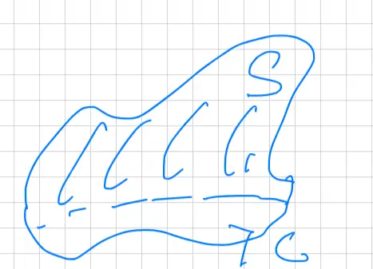
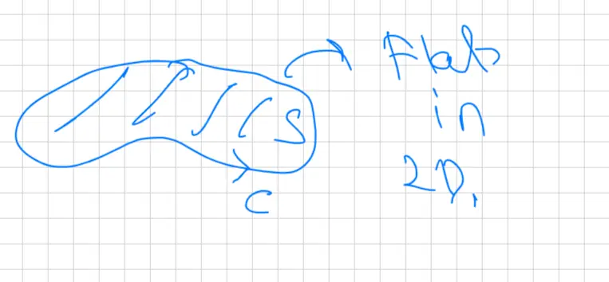
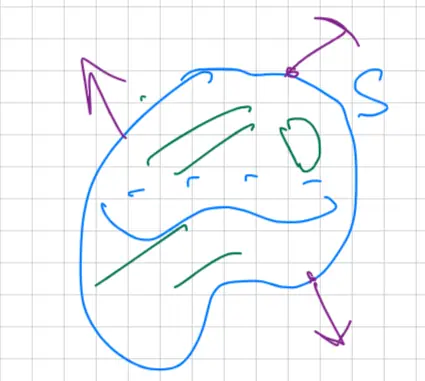

Final Review (05/01)
Compute Line Integrals
FTCLI (Fundamental Theorem of Calculus for Line Integrals)
\[ \int_C \nabla \phi \cdot d\vec{r} = \phi(\text{end}) - \phi(\text{start}) \]
if is given a conservative \( \vec{F} \)
Stokes' Theorem
\[ \oint_C \vec{F} \cdot d\vec{r} = \iint_S \text{curl } \vec{F} \cdot \vec{n} \, dS \]

Visual Description:
A 3D diagram representing Stokes' Theorem. It shows an open, wavy surface S in space. The surface is bounded by a closed curve C at its base. Small vertical line segments are drawn on the surface S to indicate its orientation and normal vectors.
Green's: Special case
Flat in 2D.

Visual Description:
A 2D diagram representing Green's Theorem as a special case of Stokes' Theorem. It depicts a flat, irregular region S in a plane, shaded with diagonal hatch lines. The region is enclosed by a boundary curve C.
Divergence; Compute Surface Integral
Divergence Theorem
\[ \iint_S \vec{F} \cdot \vec{n} \, dS = \iiint_D \text{div } \vec{F} \, dV \]

Visual Description:
A diagram representing the Divergence Theorem. It shows a closed, 3D blob-like volume D bounded by a surface S. Multiple arrows, labeled with the unit normal vector n, point outward from various locations on the surface S, representing the outward flux from the volume.
![A three-dimensional technical sketch illustrating a method for calculating flux through a non-closed surface. It shows an irregular, open upper surface S, which is noted as being 'hard to parametrize'. To create a closed volume D, a flat horizontal base surface S_1 is added at the bottom. An upward-pointing arrow on S and a downward-pointing arrow on S_1 indicate the outward-pointing normal vectors for the closed region. Parallel hatching lines are used on the surfaces to provide a 3D perspective of the enclosed volume.](img/review-final3-4.webp)
![A 3D coordinate system diagram illustrating a Stokes' theorem problem. It depicts a hemisphere defined by \( z = \sqrt{4 - x^2 - y^2} \), representing part of a sphere with radius 2. A vertical cylinder with radius 1, defined by \( x^2 + y^2 = 1 \), passes through the sphere. The surface S is identified as the portion of the hemisphere contained within this cylinder and is highlighted with blue diagonal shading. The boundary curve C is the circle formed at the intersection of the cylinder and the hemisphere. The x, y, and z axes are clearly shown, with the cylinder extending vertically along the z-axis.](img/review-final3-5.webp)
![A 3D coordinate system diagram showing a solid upper hemisphere representing the region D. The vertical axis is labeled 'z' and the horizontal axes represent the x-y plane. The hemisphere is centered at the origin, with its base being a circle in the xy-plane defined by the equation \(x^2 + y^2 \le 4\). The upper curved boundary is defined by \(z = \sqrt{4 - x^2 - y^2}\). The interior of the hemisphere is shaded with diagonal hatch marks to indicate a volume, and it is labeled with a 'D'. A red line segment is drawn from the origin to the surface of the hemisphere, indicating the radius.](img/review-final3-8.webp)
![A 3D coordinate system diagram showing a paraboloid surface. The x-axis points diagonally towards the lower-left, the y-axis is horizontal to the right, and the z-axis is vertical. The paraboloid is defined by the equation x = y^2 + z^2, with its vertex at the origin (0,0,0) and opening along the positive x-axis. The surface is truncated at the plane x = 3, where it ends in a circular cross-section. The area of the paraboloid surface between x = 0 and x = 3 is shaded with blue diagonal lines, and a label 'x=3' points to the boundary circle at the end.](img/review-final3-9.webp)
![A hand-drawn technical sketch of a hemispherical closed surface S. The diagram depicts a three-dimensional dome shape resting on a flat, circular base. The interior of the solid is shaded with light, parallel diagonal lines. Three arrows representing outward-pointing unit normal vectors (n) are shown: one arrow points straight up from the top of the dome, one arrow points downward and to the left from the edge of the circular base, and another arrow points downward and to the right from the opposite edge of the base.](img/review-final3-10.webp)
![A hand-drawn diagram of a 3D cube representing a closed surface S. The cube is sketched using perspective, with its faces textured with diagonal hatching lines. Multiple arrows are drawn originating from the center of various faces to represent the outward-pointing unit normal vector (n). An arrow points straight up from the top face, one points directly to the right from the right face, one points directly to the left from the left face, and a fourth arrow points straight down from the bottom face, illustrating the convention that normal vectors for a closed volume always point away from the interior.](img/review-final3-11.webp)